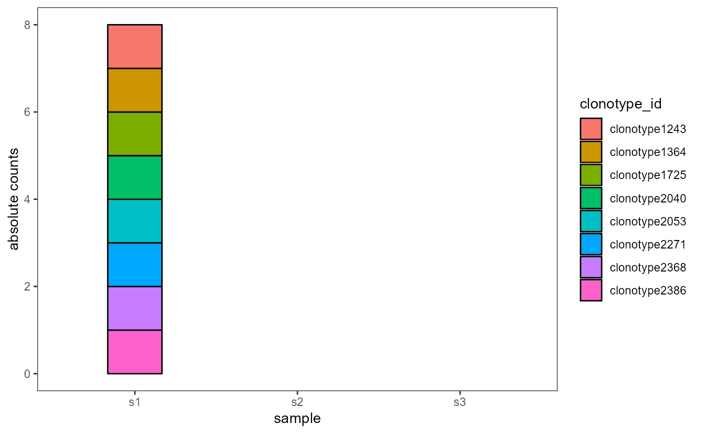

R/VDJ_dynamics.R
VDJ_dynamics.RdTrack a VDJ column across multiple samples or timepoints. Tracking consists of creating a per sample/timepoint dataframe of unique values for the VDJ column and their respective counts inside that timepoints/repertoire. Also creates alluvial plots to show the temporal dynamics of the tracked elements.
VDJ_dynamics(
VDJ,
columns.to.track,
starting.point.repertoire,
track.all.elements,
track.only.common,
max.elements.to.track,
specific.elements.to.track,
additional.grouping.column,
max.additional.groups,
specific.additional.groups,
timepoints.column,
proportions.level,
output.format,
ignore.legend
)VDJ or VDJ.GEX.matrix[[1]] object, as obtained from the VDJ_GEX_matrix function in Platypus.
string or list of strings - VDJ column with values to track (e.g., 'VDJ_cgene' will track the changes in isotype counts/proportions across multiple timepoints, defined by the timepoints.column). If two columns are provided and tracked, then a new values will be created by combining the values from each column.
string or integer - the repertoire from which to start tracking (1 = will start at the first repertoire, 's3' will start at repertoire 's3').
boolean - if T (and track.only.common=F), it will track all elements across all repertoires/timepoints.
boolean - if T (and track.all.elements=F), it will only track the common elements across all repertoires/timepoints.
integer or NULL - the maximum number of elements to track (elements are first sorted by frequency/abundance). If NULL, it will track all elements.
vector of strings or NULL - specific elements we want tracked. If NULL, all elements will be tracked.
string or 'none' - VDJ column for calculating the frequency/counts of elements on a per-group level. If output.format='plot', each unique group will have its own bar plot of timepoints/repertoires (x axis) and feature counts (y axis). If NULL, no additional grouping will be done.
integer or NULL - the maximum number of additional groups to consider (groups are first ordered by their frequency = total number of cells in that group in the VDJ matrix). If NULL, all groups will be considered.
vector of strings or NULL - specific grouping factors we want to consider. If NULL, all grouping factors will be considered.
string - VDJ column with either timepoints or repertoires across which we want to track our elements (usually 'sample_id').
string - 'absolute.counts' for absolute counts, 'group' for per group proportions, 'repertoire' for per repertoire/timepoint proportions.
string - 'plot' for alluvial barplots, 'df' for count/proportions dataframes of the tracked elements.
boolean - if T, the legend will not be included in the resulting ggplot object.
Either a count dataframe of the tracked elements across multiple timepoints/repertoires, or alluvial barplot.
VDJ_dynamics(VDJ = small_vgm[[1]],columns.to.track='clonotype_id', starting.point.repertoire=1,
max.elements.to.track=10, timepoints.column='sample_id',
output.format='plot')
#> Warning: Computation failed in `stat_alluvium()`:
#> length(s) == 1 && s %in% c(-1, 1) is not TRUE
